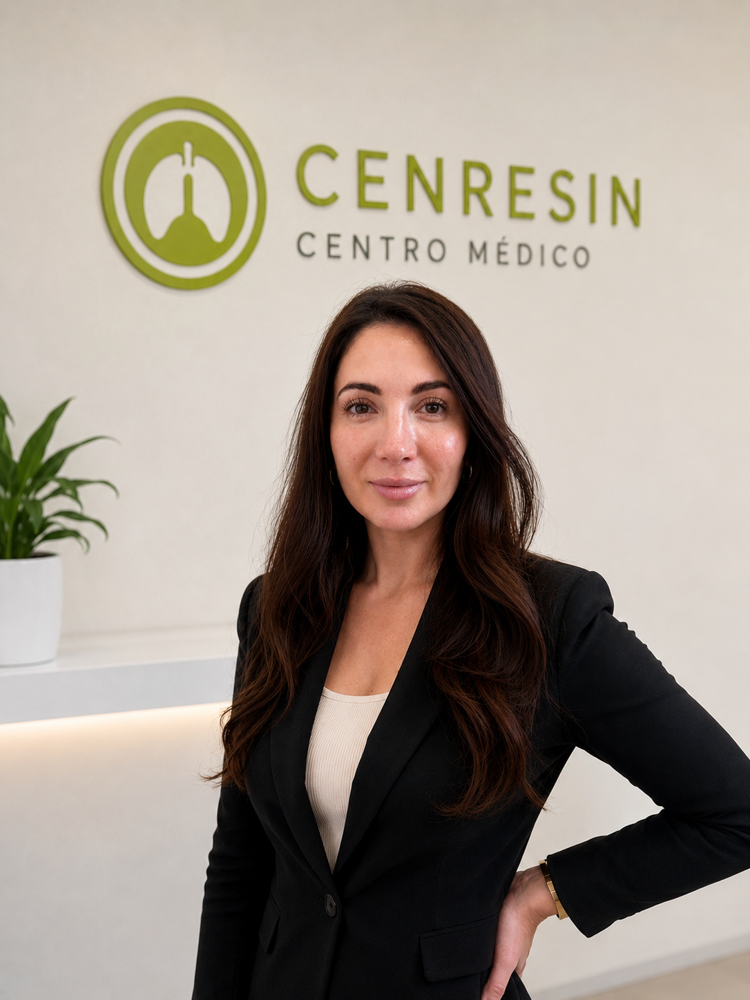
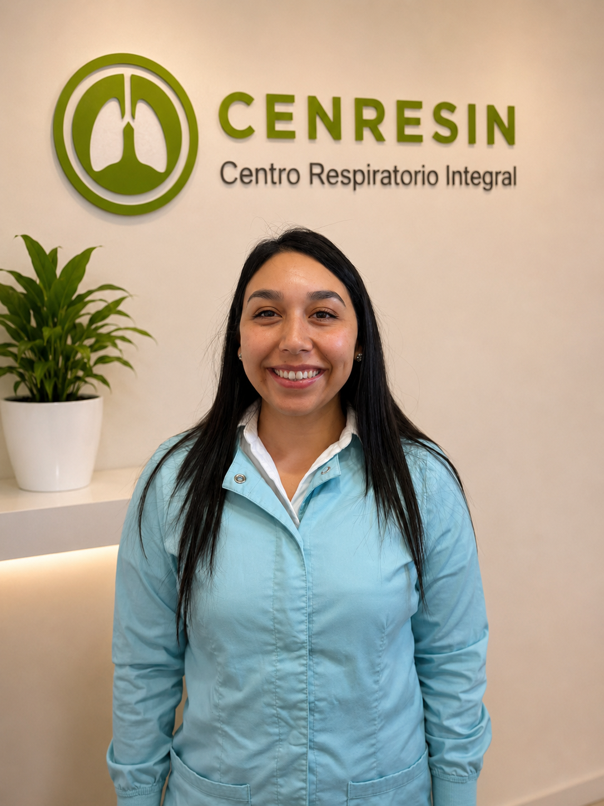
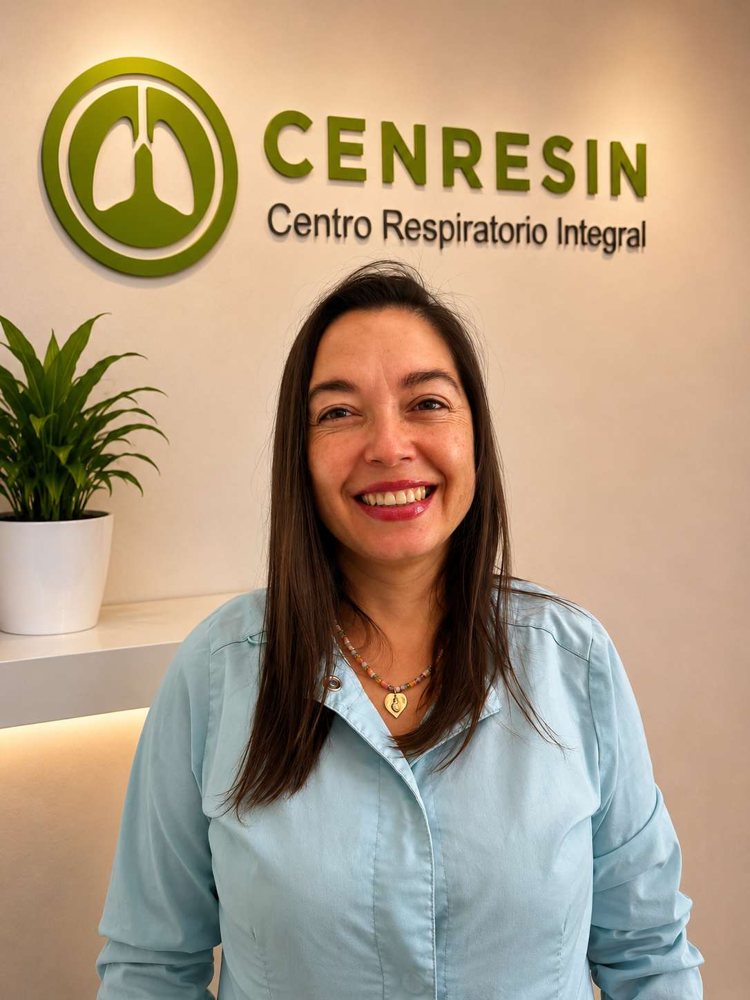
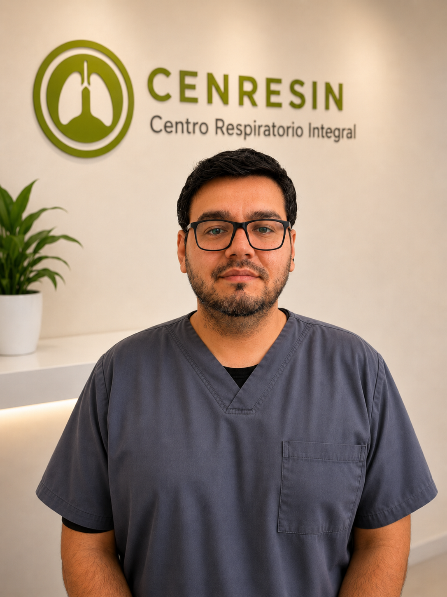
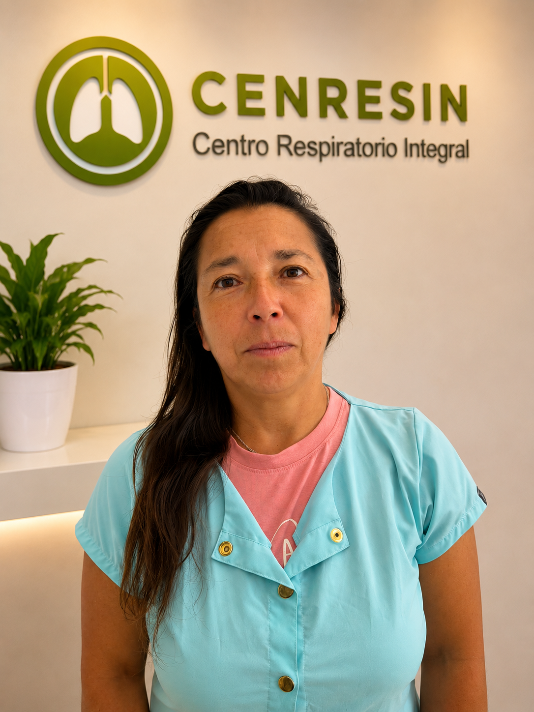

Dra. Juana Pavie
Directora MédicaLiderazgo médico y visión institucional del centro.
El equipo humano es el pilar que conecta nuestras dos áreas: atención médica e investigación clínica, trabajando bajo un mismo estándar de calidad y ética.
En CENRESIN, médicos, investigadores y personal administrativo trabajan de forma integrada para entregar una atención cercana, profesional y orientada al bienestar de cada paciente.
Equipo responsable de la conducción médica, administrativa, gestión de estudios clínicos y vinculación de personas.
Liderazgo médico y visión institucional del centro.

Apoyo estratégico en administración, gestión y continuidad operativa.

Coordinación transversal de protocolos, equipos y procesos de investigación.

Vinculación interna, coordinación de personas y apoyo a la experiencia humana del centro.
Equipo que acompaña la atención diaria de pacientes, la gestión de exámenes, el apoyo clínico y el funcionamiento del centro.

Primera orientación, recepción y acompañamiento de pacientes.

Apoyo técnico en procesos clínicos y diagnósticos del centro.

Apoyo operativo y cuidado de espacios para una atención segura y ordenada.
Equipo vinculado a la ejecución, coordinación, control y soporte de estudios clínicos respiratorios.

Liderazgo y seguimiento de proyectos de investigación clínica.

Gestión operativa y acompañamiento de protocolos de investigación.

Apoyo en coordinación de estudios, seguimiento y procesos internos.

Médico investigador del área de estudios clínicos.

Médico investigador del área respiratoria.

Apoyo sanitario en procesos vinculados a estudios clínicos.

Apoyo sanitario y operativo en investigación clínica.

Gestión de datos, muestras, documentación y normativas.
Instalaciones diseñadas para brindar una atención cercana, cómoda y profesional, junto con el desarrollo de investigación clínica respiratoria de alto estándar.

Más de 30 años aportando a la salud respiratoria y a la investigación clínica en la Región de Valparaíso.

Profesionales, investigadores y personal administrativo trabajando bajo un mismo estándar de calidad y ética.

Espacio destinado a la recepción, orientación y coordinación de consultas y exámenes respiratorios.

Atención médica especializada en un entorno cómodo, privado y profesional.

Espacio acondicionado para controles médicos, seguimiento y evaluación de pacientes.
Puedes contactarnos para resolver dudas sobre atención médica, exámenes o participación en estudios clínicos.